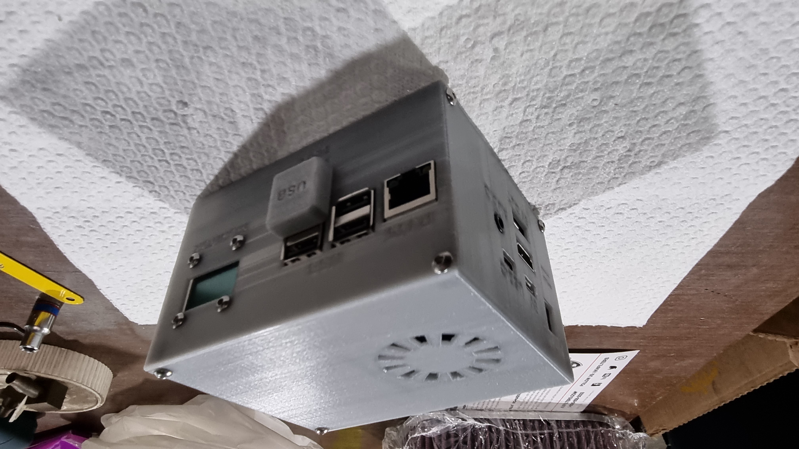

Seu software gerido apenas por você
O software é acessado apenas por você e configurado apenas por você. Criação de usuários, manipulação de arquivos e acessos exclusivos.
Implementação padrão com Raspbian
- Uso do Respbian release 20220922 Full
- Linux baseado em Debian 11 BullsEye, atualizável e de LTS
- Implementado com Desktop e Terminal, podendo escolher qual melhor interface
- Serviço SMB (SAMBA) de compartilhamento de arquivos, customizável e configurável
- Uso de VPN PiVPN, VPN dedicada para o servidor, com criptografia de 32 até 128bits
- Uso de DuckDNS para acesso DNS dinâmico, com atualização de IP a cada 5 minutos
- Uso de OpenVPN para interace de acesso externo, configurado para os clients desejados
- Possui IDE Thonny para Pytohn, BlueJ para Java e possibilidade de uso de VSCode
- Script próprio em Python de monitoramento local via tela OLED 0.96" 128x64
- Implementação de monitoramento remoto via RPiMonitor, com acesso externo (VPN)
- Possibilidade de implementação de servidor Git para versionamento de codigos



Níveis de segurança elevados
Uso de VPN
- Uso de PiVPN para acesso externo dedicado e não acessível diretamente
- Criptografia customizável de 32 até 128 bits. Você escolhe o nível
- Configuração de client dedicado para cada usuário, tornando cada acesso único
- Acesso de qualquer local do mundo ou Marte (DeepSpace Network Nasa - Em desenvolvimento)
Acesso a compartilhamento SMB via usuários
- Cada usuário acessa apenas seu setor de armazenamento,
- Possibilidade de controle de permissões pelo SO e SMB
- Não visualização de arquivos de sistema ou de outras contas
- Servidor sempre estará sempre em local que você conheça, dentro de sua casa ou escritório